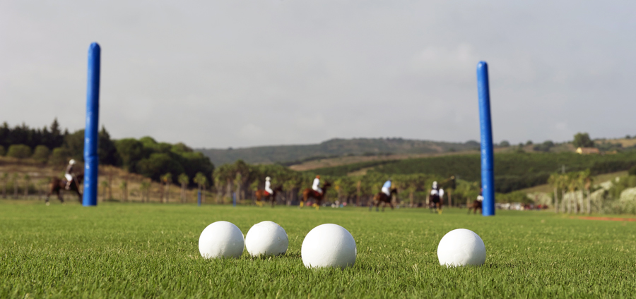

POLO

Club de polo
Aprende a jugar en las mejores canchas del pais junto a grandes profesionales con handicap 10 en este hermoso club con canchas rellenas de arena al 100%. Pasto sintetico cuidado de la mejor manera para que puedas disfrutar una experiencia unica junto a nuestros caballos.
Saber más